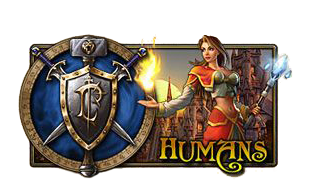
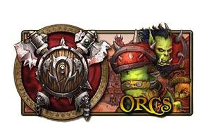
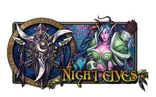
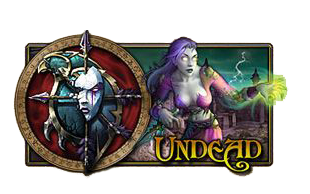
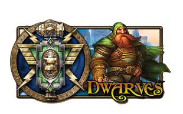
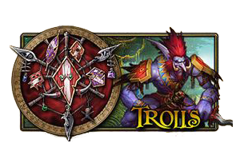
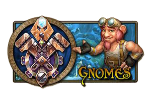
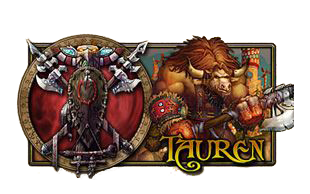
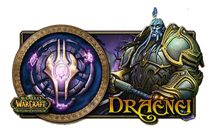
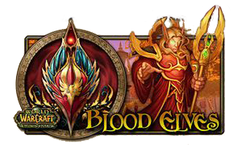

Races of Azeroth

The human kingdom of Stormwind forms the backbone of the Alliance. Stormwind's willingness to work with others to find diplomatic solutions stands out as one of its true strengths. Its citizens hold fast to the principles of honor and justice as they defend their settlements, and the Alliance, against any aggressors.

The orcs once lived as shamanic clans on the lush world of Draenor. Corrupted by Kil'jaeden, a demon lord of the Burning Legion, they invaded the world of Azeroth. Eventually able to free themselves from demonic influences, the orcs settled on Kalimdor, erecting their great capital Orgrimmar—from where they fight to find their place in the world they once came to conquer.

The ancient and reclusive Night elves—also known as kaldorei—have played a pivotal role in shaping Azeroth's fate. Fighting for the Alliance, many Night elves today still remember events of the War of the Ancients over ten thousand years ago, when they halted the Burning Legion's first invasion of Azeroth. These ferocious elves will fight tooth and nail to ensure their sacred lands are never again tainted by evil.

Death offered no escape for the scores of humans killed during the Lich King's campaign to scour the living from Lordaeron. When his grasp over the Scourge faltered after the Third War, a contingent of undead broke free of their master's iron will. Calling themselves Forsaken, they now struggle to thrive in a world that has come to despise their existence.

The bold and courageous dwarves are an ancient race descended from the earthen—titan-forged beings of living stone created when the world was young. Hailing from the mighty city of Ironforge in the snowy peaks of Khaz Modan, dwarves are courageous defenders of the Alliance.

The proud Darkspear exiles were once on the brink of extinction, when Warchief Thrall and his mighty Horde forces were driven to the trolls' remote island home during a violent storm. These trolls were welcomed into the Horde, and found their place among other outcast races.

The clever, spunky, and oftentimes eccentric gnomes present a unique paradox among the civilized races of Azeroth. Their remarkable optimism in the face of calamity symbolizes the truly unshakable spirit of the gnomes, and their boundless creativity and ingenuity is rivaled only by their commitment to the Alliance's cause.

The peaceful tauren—known in their own tongue as the shu'halo—have long dwelled in Kalimdor, striving to preserve the balance of nature at the behest of their goddess, the Earth Mother. Once nomadic in nature, the wandering tauren tribes have since united and settled in their ancestral homeland of Mulgore.

Fleeing the ruined world of Outland—the shattered remains of the planet once known as Draenor—the mysterious draenei crash-landed on Azeroth, where they pledged their loyalty to the Alliance and vowed to destroy their bitter enemy—the demonic Burning Legion. In the wake of the Legion's defeat, the draenei now seek a new destiny in the blessed Light.

For thousands of years, the high elves of Quel'Thalas drew strength from the Sunwell, a magical font of arcane energies. An invasion by the undead Scourge decimated the kingdom's population and deprived them of the Sunwell's might. Taking the name blood elves -or sin'dorei in their own tongue- the people of Quel'Thalas sated their magical thirst for a time with demonic fel energies. Once the Sunwell was restored, the blood elves worked to rebuild their homeland and help lead the Horde into a bold future.